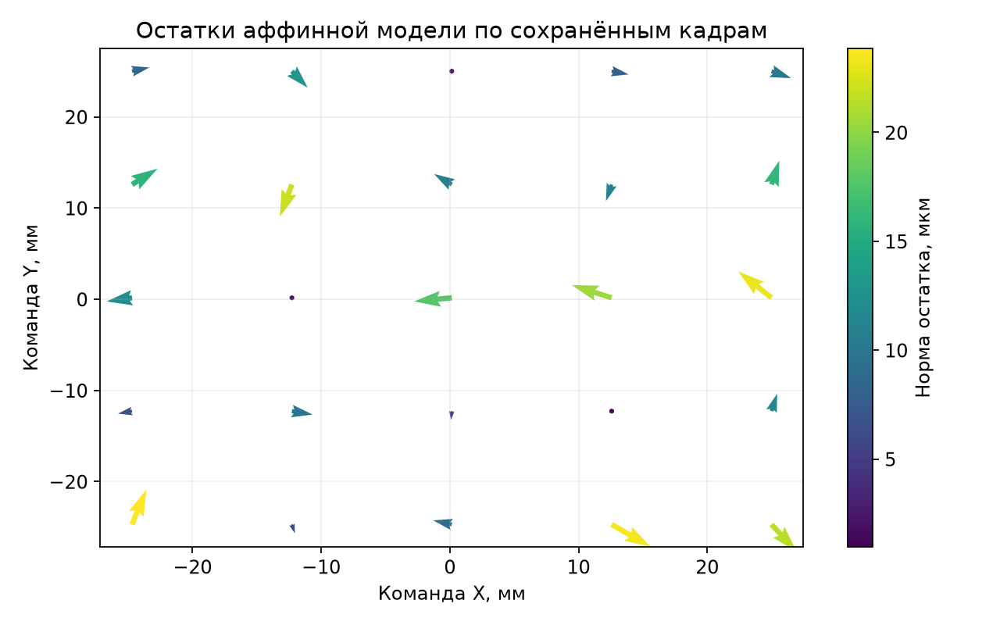
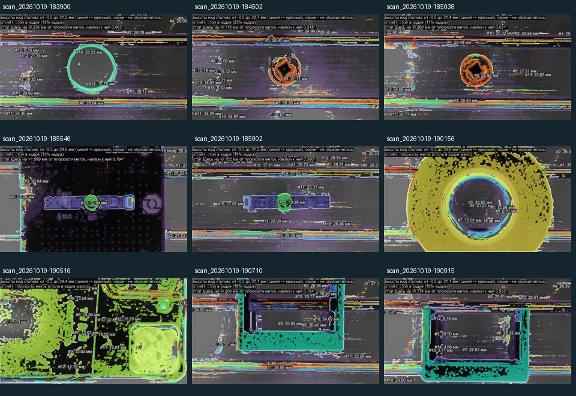

Результат · 01 / 10
Камера и XY-станок
Измерение положения и высоты · промежуточные результаты · ноябрь 2026
01Визуальное уточнение координат меток
02Восстановление высоты по серии кадров
03Проверка геометрии и точности измерений
Исходники common/, scripts/, z/; calib/; scans/; log.txt
Подробные пояснения к слайду
Цель проекта — использовать камеру для уточнения положения на XY-станке и измерения высоты объектов. Стереопара формируется перемещением одной камеры. Представлены сохранённые экспериментальные данные и проверка вычислительных методов; независимая метрологическая аттестация пока не проведена.
Устройство · 02 / 10
Стек и структура проекта
Python · OpenCV 5.0 · NumPy · GRBL 1.1
01OpenCV / DirectShow — камера, ArUco и ChArUco, обработка кадров
02NumPy — линейная алгебра; pyserial — обмен с GRBL; Pillow — подписи
03common — ядро; scripts — калибровка и XY; z — измерение высоты
source_inventory.json; scripts/survey_markers.py:135; z/measure_height.py:233
Подробные пояснения к слайду
В проекте 20 файлов Python и 4623 строки, включая комментарии и пустые строки. Семь файлов common/ включают пустой __init__.py; scripts/ содержит 11 утилит, z/ — два модуля. Центральный сценарий XY — класс Survey в survey_markers.py. HeightTool наследуется от Survey и расширяет его измерением плоскости и сканированием. Чистые математические функции в geometry.py и stereo.py уже удобны для независимых проверок. Слабое место структуры — зависимость HeightTool от внутреннего состояния Survey, интерфейса OpenCV и общей группы argparse-параметров. Нет обнаруженных README, тестового каталога, pyproject.toml или Git-репозитория в рабочей папке. Сохранённые JSON и изображения — существенная часть проекта, их нельзя рассматривать как случайные временные файлы. Фактическая среда аудита: Python 3.14.5 и OpenCV 5.0.0. pygrabber используется для перечисления форматов DirectShow. Алгоритмы работают локально, без нейросетевых моделей.
Устройство · 03 / 10
Последовательность измерения
Калибровка камеры и движения связывает пиксели с координатами станка.
01Фиксация режима и фокуса → ChArUco → K, D, V_cam
02Метка → исправление дисторсии → матрица A → наведение XY
03Сетка кадров → смещения Oᵢ → plane sweep → высота над столом
common/geometry.py:35; scripts/survey_markers.py:461,566; z/measure_height.py:65
Подробные пояснения к слайду
Сначала подбирается режим видеопотока и фиксируется фокус. ChArUco даёт соответствия между пикселями углов и координатами напечатанной доски в миллиметрах. По ним оцениваются внутренние параметры K и дисторсия D. Сетка известных команд используется для оценки реального движения V_cam в осях камеры. В режиме XY короткие ходы определяют A — сдвиг изображения на миллиметр команды. Наведение компенсирует остаток между центром метки и главной точкой. Для Z позиции GRBL переводятся в центры камер Oᵢ = V_cam(cᵢ − c_ref). Изображения исправляются от дисторсии; затем перебираются плоскости, максимизирующие корреляцию. Высота объекта отсчитывается от локального стола либо сохранённой плоскости меток. Если основание отсчёта изменилось, сравнивать результаты без этой информации нельзя.
Алгоритмы · 04 / 10
Калибровка камеры
ChArUco, модель объектива и проверка устойчивости решения.
01640×480, только сдвиги: RMS 0,244 px, но калибровка недостоверна
021920×1080, 40 кадров: pinhole 0,669 px → rational 0,548 px
03Проверка устойчивости фокусного уже есть; независимой проверки длины нет
scripts/calibrate_distortion.py:294,306; calib/calib*.json
Подробные пояснения к слайду
Хорошая калибровка использует 40 кадров: 25 положений сетки и 15 кадров без записанных перемещений. Сценарий предусматривает их ручной захват с наклонами; отсутствие offsets само по себе не доказывает конкретный угол наклона. Для плохой калибровки 640×480 fx достигает 4971 px, а для плохой 1080p — 12534 px. Малый RMS не устраняет вырожденность съёмки плоской мишени при одних сдвигах. reliability() повторяет оптимизацию из 0,5× и 2× фокусного, проверяет разброс, FOV, коэффициенты и RMS. Rational улучшил обучающий RMS на 18,1%, но это не означает улучшение миллиметровой точности на 18,1%. Нужны отложенные кадры с другими позами, карта остатка по полю и контроль физического размера доски. Сохранённый фокус рабочей системы — 197; режимы и фокус должны входить в идентификатор калибровки.
Алгоритмы · 05 / 10
Уточнение координат по метке
Локальная модель движения и компенсация остатка по изображению.
01Δc = A⁻¹(p_target − p_marker)
03Подход с одной стороны; tol = 0,02 мм, accept = 0,05 мм
scripts/survey_markers.py:363,461,566; calib/table_frame.json
Подробные пояснения к слайду
Матрица A получается из ходов +d,+d,−d,−d по каждой оси. Масштаб берётся из участков без смены направления, а недоход после разворота используется как оценка люфта. При наведении программа делает ограниченные коррекции, проверяет расхождение, допускает остановку при малом неустраняемом остатке и записывает виртуальную координату метки как позицию GRBL плюс визуальный остаток. Это разумный способ измерить положение цели даже когда механика не может физически довести её до нуля. Но запись c_marker не означает, что камера действительно стоит ровно над меткой, и сама по себе не доказывает абсолютную точность. В данных A примерно diag(14,11; −14,05) px на мм команды. Люфт оценён как 0,0675 мм по X и 0,0258 мм по Y; перебег для однонаправленного подхода — 0,19 мм. Эти оценки получены в одной локальной процедуре, без статистики по всему столу.
Алгоритмы · 06 / 10
Восстановление высоты
Сетка 3×3, шаг 12 мм. Сопоставление кадров методом plane sweep.
01Oᵢ = V_cam(cᵢ − c_ref); плоскость nᵀX = d₀ − h
02Hᵢ(h) = K[I − Oᵢnᵀ/(d₀ − h)]K⁻¹
03ZNCC по окнам → максимум по h → параболическое уточнение
z/stereo.py:122,128,251; z/measure_height.py:65,582; math_checks.json
Подробные пояснения к слайду
В ScanResult опорным выбирается кадр ближайшей к начальной позиции. По умолчанию это сетка 3×3 с шагом 12 мм и охватом 24×24 мм; расстояние от центрального кадра до диагонального равно примерно 17 мм команд, а 24 мм — расстояние между крайними кадрами вдоль оси. Карта считается в половинном разрешении, окно 9×9, диапазон −3…30 мм, шаг 0,25 мм. По выбранной точке refine_point использует полное разрешение, шаблон 31×31 и шаг поиска 0,01 мм. Шаг поиска не является точностью измерения. Формула гомографии корректна для чистого переноса камеры с постоянной ориентацией; поворот или изгиб кронштейна нарушает эту модель. Проверки на синтетической плоскости и проекции прошли. Они подтверждают реализацию базовой геометрии, но не точность реального оборудования.
Измерения · 07 / 10
Проверка модели перемещений
Повторная обработка 25 сохранённых кадров калибровочной сетки.

0125 точек · RMS 0,01425 мм · максимум 0,02385 мм
02Leave-one-out: 0,01643 мм при фиксированных K и D
03Угол осей 89,990°; модель не описывает весь рабочий ход
common/geometry.py:35; analyze.py; grid_residuals.json
Подробные пояснения к слайду
На каждом кадре строится гомография из исправленных пикселей в координаты доски. Её значение в главной точке камеры даёт наблюдаемую точку на доске. Далее двумерные координаты аппроксимируются аффинной функцией команд X,Y. На рисунке показаны остатки этой модели, стрелки увеличены для видимости; цвет кодирует норму в микрометрах. При leave-one-out исключалась одна точка только из аффинной подгонки, а K,D оставались от всех исходных кадров. Поэтому это частичная проверка обобщения модели движения, не независимая оценка камеры. Остатки включают распознавание, модель объектива, доску и механику. Их нельзя объявлять чистой ошибкой станка. Сетка покрывает лишь часть поля перемещений; перенос масштаба на расстояние порядка 280 мм — экстраполяция, требующая отдельного опыта.
Измерения · 08 / 10
Масштаб осей и люфт
Полученные поправки относятся к принятому размеру печатной доски.
01Масштаб: X = 0,993651; Y = 0,994747 мм на мм команды
02Люфт: X ≈ 0,068 мм; Y ≈ 0,026 мм
03Замыкание обхода: 0,027 мм; абсолютная точность требует эталона
calib/table_frame.json; calib/calib_cam0_1920x1080_pinhole_rational.json
Подробные пояснения к слайду
Определим s = L_vision/L_cmd. Тогда относительное отклонение от команды e_cmd = 100(s−1)% составляет −0,6349% и −0,5253%. Если принять визуальную длину за эталон и оценивать показание станка относительно неё, знаменатель меняется: 100(1/s−1)% = +0,6389% и +0,5281%. Это две разные нормировки одного сравнения. В файле рамки сторона 0–3 равна 284,235 мм команд и 282,431 мм после пересчёта. Разность 1,804 мм — вычисленная поправка, не экспериментально доказанная ошибка этой стороны. Из текущих 800 импульсов/мм формально следуют 805,111 по X и 804,225 по Y, но менять настройки можно только после проверки реального размера доски и повторяемости. Здесь настройки станка не изменялись. Масштаб печати, например +0,5%, способен почти целиком объяснить наблюдаемое рассогласование.
Измерения · 09 / 10
Результаты сканирования
Девять сканов с разными объектами; высоты определены на 30–64% кадра.

019 сканов по 9 кадров; определилось 30–64% изображения
02Однотонные поверхности, кромки и повторяющийся рисунок дают неоднозначность
03Области около 29–30 мм нужно проверять на попадание в границу поиска
scans/*/heights.png; log.txt; z/stereo.py:128,339
Подробные пояснения к слайду
Монтаж составлен из сохранённых heights.png. Разные сканы содержат разные объекты и положения, поэтому разброс их высот не является повторяемостью одного объекта. Видны многочисленные фрагменты на кромках и полосах стола; часть получает высоту около верхней границы диапазона. Это признак для проверки, а не доказательство ложности каждой такой области. find_objects использует 98-й процентиль внутри сегмента как height_top. Несколько процентов ошибочно высоких точек способны завысить результат. plane_sweep отбрасывает максимум точно на границе диапазона, но не проверяет близость второго пика, согласие отдельных направлений или геометрическую согласованность. Для демонстрации следует показывать одновременно исходный кадр, маску достоверности, карту и ручное измерение контрольного объекта. Сводка всех девяти сканов находится в metrics.json.
Проверка · 10 / 10
Следующий этап
Проверить точность и перейти от локальной поправки к модели ошибок.
01Измерить контрольные длины и высоты независимым инструментом
02Собрать повторные ходы: оба направления, реверсы, разные положения
03Сравнить станок, камеру и совместную коррекцию по bias, SD и RMSE
План новых измерений; аппаратный эксперимент в ходе аудита не выполнялся
Подробные пояснения к слайду
Предлагаемый план, а не проведённый эксперимент. Сначала проверить плоскостность и масштаб мишени по нескольким длинным отрезкам в обоих направлениях; записать средство измерения и его неопределённость. Затем в рабочей области выполнить минимум 10 повторов выбранных перемещений по X,Y и диагоналям, отдельно с реверсом и однонаправленным подходом. Длинные перемещения брать только в доступном ходе. Для Z использовать независимо измеренные ступени, например 2,5,10,20 мм, при нескольких положениях и базах 6,12,18 мм; по возможности 24 мм для отдельной пары с достаточным перекрытием. Отдельно снять 100–300 неподвижных кадров для шума детектора и 20 одинаковых замкнутых циклов для дрейфа. Зафиксировать температуру, нагрузку, скорость и фокус; повторить в другую сессию. Разделять обучение и проверку целыми циклами, не соседними кадрами. Эталон желательно точнее целевого результата в 3–5 раз. Цели 0,02–0,05 мм в XY и 0,05–0,10 мм по Z — лишь предлагаемые критерии для обсуждения, не достигнутые характеристики.
Расчёт чувствительности · не паспорт точности
Что изменится при другом шуме, масштабе или базе
XY: две независимые точки на фронтальной плоскости, общий масштаб; Z: идеальная стереопара, независимые ошибки базы и диспаратности. Не учтены дисторсия, наклон, фокусное, общие корреляции и опорная плоскость. σp и σd задаются отдельно: при независимых одинаковых пиксельных ошибках σd = √2·σp. Выигрыш — условное отношение стандартных неопределённостей, не измеренный результат проекта.